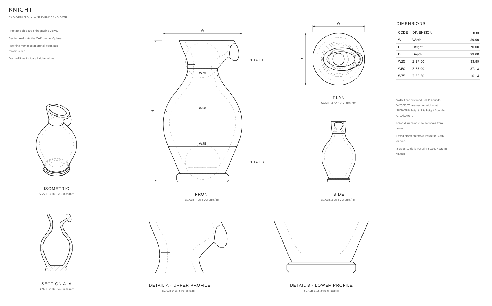
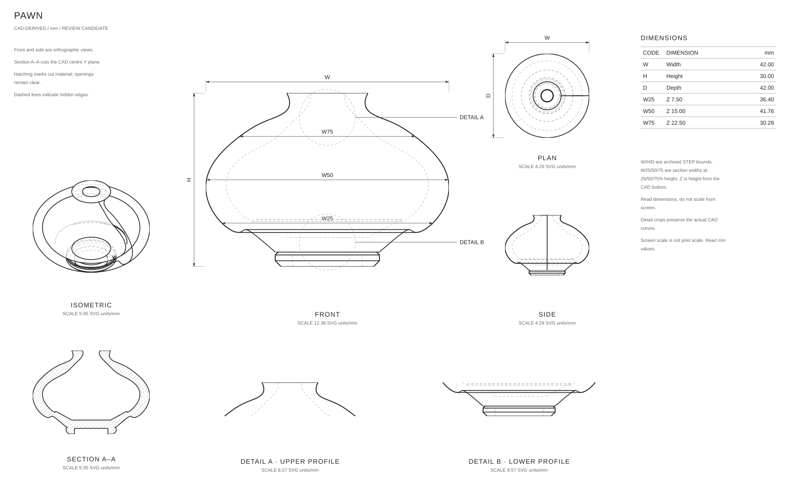
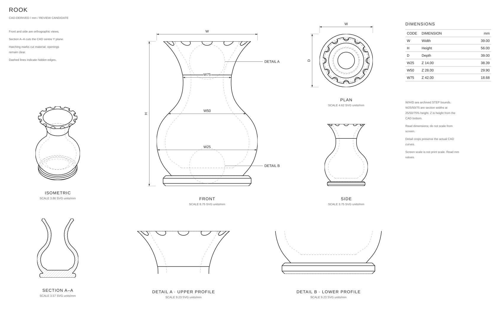
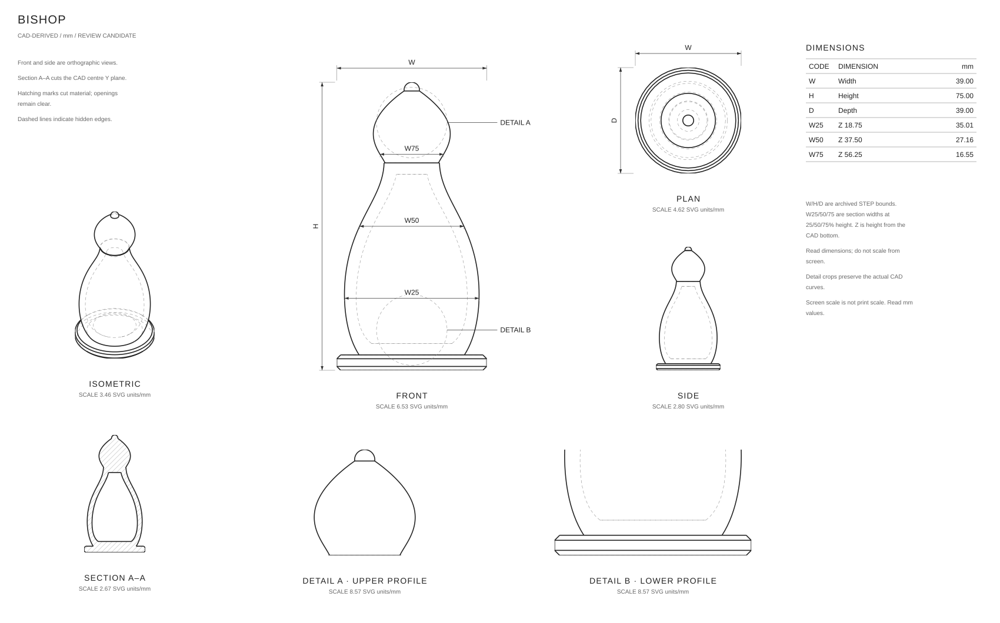
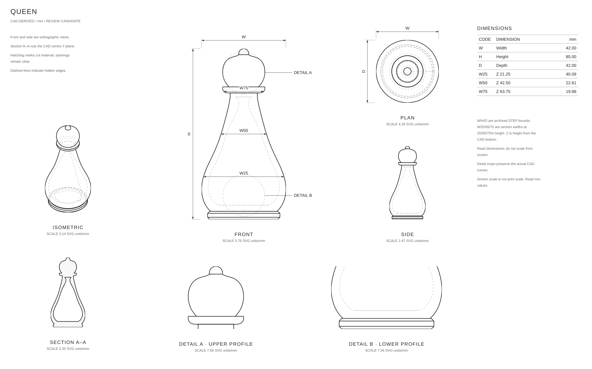
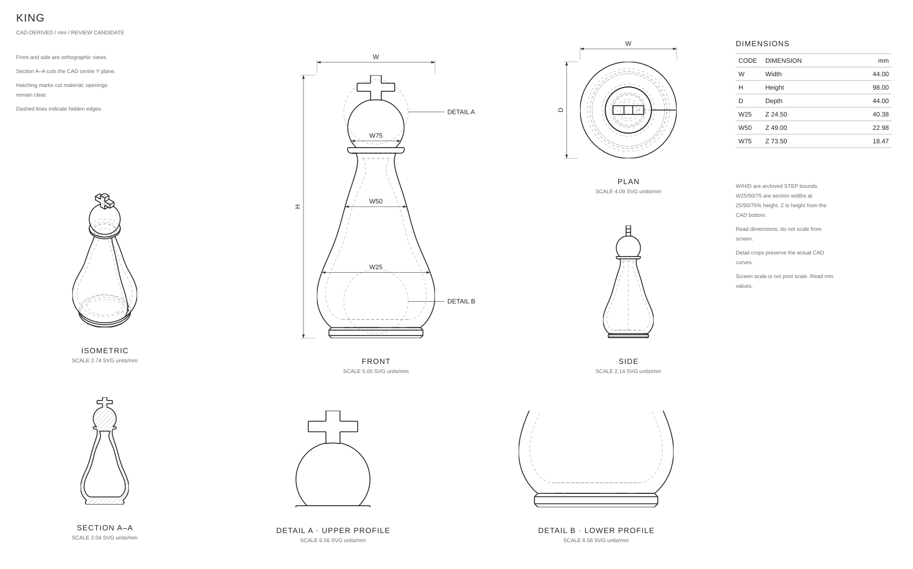

BOARDDrawingboardRevisiondrawing-r1Part1 / 7UnitsmmScalePer view · SVG units/mmReview statusreviewed-provisionalSource and evidenceProject: 99-chess-usabilitySTEP SHA-256: 8c9593febf5d7403a8d34d01ae7f9c1eaadb56bafc49eca442e197543dc78f3aReview status is not manufacturing approval. Asterisks retain unconfirmed source dimensions.Fit whole sheetScroll inside the drawing to inspect details. Fit shows an overview.
KNIGHTDrawingknightRevisiondrawing-r1Part2 / 7UnitsmmScalePer view · SVG units/mmReview statusreviewed-provisionalSource and evidenceProject: 99-chess-usabilitySTEP SHA-256: 6d629673e51a2fc3196a33fe23740512bb442a9d5943972e9c134ad0cf87d58fReview status is not manufacturing approval. Asterisks retain unconfirmed source dimensions.Fit whole sheetScroll inside the drawing to inspect details. Fit shows an overview.
PAWNDrawingpawnRevisiondrawing-r1Part3 / 7UnitsmmScalePer view · SVG units/mmReview statusreviewed-provisionalSource and evidenceProject: 99-chess-usabilitySTEP SHA-256: 77c8eeb81a05a29742edc6ddd6f2d14d42621b4c8486c1d3819ba9a05528ace6Review status is not manufacturing approval. Asterisks retain unconfirmed source dimensions.Fit whole sheetScroll inside the drawing to inspect details. Fit shows an overview.
ROOKDrawingrookRevisiondrawing-r1Part4 / 7UnitsmmScalePer view · SVG units/mmReview statusreviewed-provisionalSource and evidenceProject: 99-chess-usabilitySTEP SHA-256: b80a01ef7c0e06ed2b99fb5b58f29a1680912807e321c6d34b1eaefb0e09b2ccReview status is not manufacturing approval. Asterisks retain unconfirmed source dimensions.Fit whole sheetScroll inside the drawing to inspect details. Fit shows an overview.
BISHOPDrawingbishopRevisiondrawing-r1Part5 / 7UnitsmmScalePer view · SVG units/mmReview statusreviewed-provisionalSource and evidenceProject: 99-chess-usabilitySTEP SHA-256: 376ddd61b4d079babbefb1cfab16c8251350ac002fa612daa7349c8e0579f346Review status is not manufacturing approval. Asterisks retain unconfirmed source dimensions.Fit whole sheetScroll inside the drawing to inspect details. Fit shows an overview.
QUEENDrawingqueenRevisiondrawing-r1Part6 / 7UnitsmmScalePer view · SVG units/mmReview statusreviewed-provisionalSource and evidenceProject: 99-chess-usabilitySTEP SHA-256: eb29083120bb43c8232655b19fb91c8b4e2d4b41854a1189eef5e0354b170647Review status is not manufacturing approval. Asterisks retain unconfirmed source dimensions.Fit whole sheetScroll inside the drawing to inspect details. Fit shows an overview.
KINGDrawingkingRevisiondrawing-r1Part7 / 7UnitsmmScalePer view · SVG units/mmReview statusreviewed-provisionalSource and evidenceProject: 99-chess-usabilitySTEP SHA-256: 4471880e5cfa5a49adfa7b21692cb71584178c687177b8edefe5867deac94a5cReview status is not manufacturing approval. Asterisks retain unconfirmed source dimensions.Fit whole sheetScroll inside the drawing to inspect details. Fit shows an overview.